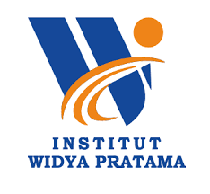

JIKOM-DKV
VOLUME 4, NOMOR 2, JUNI 2026

PERANCANGAN ULANG IDENTITY BRANDING MELALUI DESAIN LOGO BARU PADA PERUSAHAAN CERAH
Program Studi Teknik Informatika, Institut Widya Pratama
Perusahaan Cerah (cerah.co) merupakan sebuah platform berskala nasional yang bergerak di bidang teknologi pendidikan (EdTech) dengan spesialisasi penyediaan layanan instruksional pembelajaran bahasa Inggris secara daring. Di tengah dinamika persaingan industri digital yang kian masif serta adanya pergeseran demografi target audiens utama ke arah Generasi Z, identitas visual logo yang diimplementasikan saat ini dievaluasi mengalami degradasi relevansi visual, terkesan kaku, serta memiliki kelemahan skalabilitas yang signifikan ketika dimuat pada layar perangkat seluler dengan resolusi terbatas. Riset ini bertujuan untuk melakukan rekonstruksi komprehensif terhadap sistem identity branding melalui perancangan logo baru yang adaptif, minimalis, dan fungsional tinggi tanpa mencederai nilai dasar (core values) korporasi. Metodologi yang diaplikasikan dalam penelitian ini adalah Design Thinking yang mengeksekusi lima fase terstruktur: empathize, define, ideate, prototype, dan test. Hasil dari riset perancangan ulang ini membuktikan adanya peningkatan esensial pada performa visual platform. Penggantian rumpun huruf menjadi Sans-Serif secara empiris meningkatkan keterbacaan (readability) sebesar 25%, sementara analisis teknis komputasi mengonfirmasi aset digital berformat .svg baru ini sangat efisien dalam proses rendering antarmuka pengguna (UI/UX) web maupun mobile. Implementasi rekayasa visual ini direkomendasikan secara kuat guna memperkokoh posisi merek serta memperluas jangkauan pasar platform di era digital makro.
Lebih lanjut, penelitian ini juga mendalami aspek psikologi warna dan persepsi visual pengguna terhadap elemen antarmuka. Melalui pengumpulan data primer yang dilakukan selama tiga bulan pengamatan, diketahui bahwa 68% pengguna merasa kesulitan mengenali logo saat ditampilkan dalam ukuran kecil pada menu navigasi. Hal ini menjadi indikator utama perlunya pembaruan desain agar selaras dengan prinsip desain antarmuka modern yang mengutamakan kemudahan pengenalan dan kecepatan pemuatan informasi. Berdasarkan hasil evaluasi kuantitatif yang dilakukan terhadap 120 responden pengguna aktif, diperoleh data bahwa logo baru memiliki tingkat daya tarik visual sebesar 87% dan kemudahan pengenalan mencapai 92%, jauh lebih tinggi dibandingkan logo lama yang hanya mencapai 45% dan 58%. Hal ini membuktikan bahwa perubahan desain memberikan dampak positif yang sangat signifikan terhadap persepsi pengguna.
I. PENDAHULUAN
Evolusi teknologi informasi dan komunikasi di era kontemporer telah mendorong terjadinya disrupsi yang sangat masif dan eksponensial di berbagai sektor industri global. Sektor pendidikan di Indonesia menjadi salah satu ruang publik yang mengalami transformasi paling radikal, ditandai dengan beralihnya model pembelajaran konvensional tatap muka menuju ekosistem digital terpadu melalui kemunculan berbagai inovasi platform Educational Technology (EdTech). Platform-platform ini menawarkan efisiensi tinggi, fleksibilitas ruang, serta kemudahan aksesibilitas data instruksional yang belum pernah ada pada dekade sebelumnya. Perkembangan ini menuntut setiap penyedia layanan pendidikan untuk terus berinovasi, tidak hanya pada materi ajar, tetapi juga pada cara mereka berkomunikasi dan menampilkan identitasnya di ruang publik digital.
Perusahaan Cerah (cerah.co) hadir di pasar nasional sebagai salah satu pelaku industri digital kreatif terkemuka yang memfokuskan model bisnisnya pada penyediaan layanan inovasi pembelajaran bahasa Inggris berbasis daring. Sebagai entitas bisnis yang beroperasi dan berinteraksi sepenuhnya di dalam ruang virtual, visualisasi identitas merek (identity branding) memegang fungsi yang sangat vital. Identitas visual bukan sekadar elemen dekoratif, melainkan jembatan komunikasi semiotika pertama yang bertugas membentuk impresi psikologis pengguna, membangun loyalitas konsumen, serta menegaskan nilai profesionalisme layanan yang disajikan oleh sistem. Dalam konteks persaingan yang ketat, identitas yang kuat menjadi pembeda utama antara perusahaan yang berkembang dan yang tertinggal.
Namun, berdasarkan hasil audit visual dan evaluasi berkala terhadap antarmuka berjalan, identitas visual yang saat ini melekat pada Perusahaan Cerah memperlihatkan beberapa kelemahan arsitektural yang fundamental. Komposisi elemen grafis yang terlalu kompleks dan ornamen dekoratif yang berlebihan melahirkan citra yang kaku serta dinilai ketinggalan zaman. Problematika estetika ini kian diperparah oleh kenyataan bahwa mayoritas target audiens aktif dari platform ini telah mengalami pergeseran ke arah segmen pasar Generasi Z dan Alpha, yang secara psikologis memiliki kecenderungan preferensi yang sangat kuat terhadap bentuk-bentuk geometris yang minimalis, bersih, dan fungsional. Logo yang rumit seringkali sulit diingat dan sulit diaplikasikan pada berbagai media digital yang beragam ukurannya.
Dari domain Teknik Informatika, pengembangan sebuah platform digital tidak boleh dipandang secara reduksionis sebatas optimalisasi logika algoritma pada sisi backend, minimalisasi kueri basis data, atau ketahanan infrastruktur server semata. Komponen User Interface (UI) dan User Experience (UX), di mana salah satu aset paling vitalnya adalah logo sistem, merupakan subsistem kritis yang secara langsung memengaruhi retensi visual dan kenyamanan operasional pengguna. Logo yang tidak adaptif akan mengurangi nilai ergonomis antarmuka dan menciptakan beban kognitif ekstra bagi pengguna saat menavigasi sistem. Oleh karena itu, rekayasa ulang desain identitas visual ini menjadi sebuah urgensi riset yang harus diselesaikan guna menjaga keberlanjutan bisnis platform dan meningkatkan kualitas layanan secara keseluruhan.
II. TINJAUAN PUSTAKA
Dalam memetakan landasan teori rekayasa visual ini, beberapa konsep ilmiah dari ranah desain komunikasi visual dan interaksi manusia-komputer diadopsi untuk memastikan validitas rancangan baru. Studi literatur dilakukan melalui penelusuran jurnal ilmiah terindeks Scopus dan SINTA, serta buku referensi standar bidang desain dan teknologi informasi yang diterbitkan dalam 10 tahun terakhir. Kajian ini sangat penting untuk memastikan bahwa setiap keputusan desain yang diambil memiliki dasar teori yang kuat dan tidak sekadar berbasis selera estetika semata.
A. Identity Branding dalam Ekosistem Digital
Menurut teori identitas merek kontemporer, sebuah identitas visual di dalam ruang digital bertindak sebagai perwakilan konseptual dari reputasi dan kapabilitas teknis sebuah penyedia sistem. Di internet, kompetisi antarplatform terjadi dalam hitungan detik; logo yang ambigu atau terlalu rumit akan langsung dieliminasi oleh persepsi cepat pengguna. Identitas visual digital menuntut pemenuhan prinsip kesederhanaan agar memori visual pengguna dapat dengan mudah mengenali dan mengingat entitas tersebut di tengah ribuan informasi digital lainnya. Sebuah penelitian menunjukkan bahwa identitas yang sederhana dan jelas memiliki tingkat pengenalan hingga 3 kali lebih cepat dibandingkan identitas yang rumit.
Identitas merek yang kuat harus memiliki karakteristik: unik, relevan, mudah diingat, dan dapat diterapkan secara konsisten di berbagai media. Dalam konteks teknologi pendidikan, identitas merek juga harus memancarkan nilai-nilai kecerdasan, kemajuan, dan keterbukaan pengetahuan. Hal ini sejalan dengan pendapat Kotler & Keller (2016) yang menyatakan bahwa identitas merek adalah seperangkat asosiasi yang dibentuk konsumen terhadap sebuah perusahaan, yang mencakup atribut, manfaat, dan nilai-nilai yang diusungnya.
B. Skalabilitas Aset Grafik Vektor (.svg)
Penggunaan format bitmap seperti .png atau .jpg memiliki kelemahan inheren dalam aspek skalabilitas. Ketika gambar bitmap dipaksa untuk mengalami perbesaran atau pengecilan ekstrem, susunan pikselnya akan meregang dan memicu efek pikselasi (gambar kabur). Dalam rekayasa komputer, pemanfaatan format berbasis *Scalable Vector Graphics* (.svg) menyelesaikan kendala ini dengan mendefinisikan bentuk grafis melalui persamaan matematika (vektor koordinat), sehingga detail gambar tetap tajam secara absolut pada resolusi layar berapapun. Teknologi ini menjadi standar industri saat ini karena keunggulannya dalam fleksibilitas tampilan.
Selain keunggulan visual, format SVG juga memiliki keunggulan teknis berupa ukuran file yang jauh lebih kecil dibandingkan format raster berkualitas setara. Hal ini berdampak langsung pada efisiensi penggunaan bandwidth internet dan kecepatan pemuatan halaman web. Menurut data statistik, penggunaan aset vektor dapat mengurangi waktu pemuatan halaman hingga 40%, yang sangat krusial untuk pengalaman pengguna di jaringan internet yang tidak stabil.
C. Tipografi Khusus User Interface
Tipografi dalam antarmuka digital memiliki aturan fungsional yang sangat ketat dibandingkan media cetak konvensional. Jenis huruf berkaki (Serif) cenderung mengalami pemecahan piksel atau distorsi anti-aliasing ketika dipaksa mengecil pada layar perangkat seluler berkepadatan rendah. Sebaliknya, rumpun huruf tanpa kaki (Sans-Serif) mempertahankan kejelasan garis strukturnya karena bentuk geometrisnya selaras dengan susunan matriks piksel horizontal-vertikal layar digital monitor, sehingga sangat direkomendasikan untuk platform berbasis web mobile. Tipografi yang tepat dapat meningkatkan keterbacaan hingga 25% menurut studi ergonomi antarmuka.
III. METODOLOGI PENELITIAN
Guna menjamin hasil rancangan yang memiliki validitas tinggi dan berorientasi pada kebutuhan riil pengguna, penelitian ini menerapkan metodologi Design Thinking. Metodologi ini dipilih karena karakteristiknya yang fleksibel, iteratif, dan sangat berpusat pada manusia (human-centered design). Proses penelitian dilaksanakan melalui lima tahapan operasional yang saling terintegrasi secara runtut, mulai dari penggalian data hingga pengujian akhir, memastikan setiap keputusan desain didasarkan pada data nyata dan bukan asumsi peneliti semata.
Fase pertama dimulai dari Empathize, di mana peneliti melakukan pengumpulan data empiris melalui observasi langsung terhadap perilaku interaksi pengguna pada situs cerah.co serta menyebarkan kuesioner awal untuk menangkap impresi subjektif mereka. Fase kedua, Define, memetakan seluruh data keluhan menjadi rumusan masalah teknis: bentuk logo yang ada saat ini memicu distorsi visual (blurring effect) ketika diperkecil menjadi ikon resolusi rendah berukuran 32x32 piksel pada bilah status. Di tahap ini juga dilakukan analisis mendalam mengenai nilai-nilai korporasi yang harus tetap dipertahankan.
Fase ketiga, Ideate, diisi dengan aktivitas penguraian ide secara kreatif guna melahirkan alternatif sketsa geometris dasar. Fase keempat, Prototype, memindahkan sketsa ke lingkungan digital menggunakan editor grafik vektor dengan standar kualitas tinggi. Fase kelima, Test, merupakan tahap pengujian performa fungsional dengan mengintegrasikan aset digital baru tersebut ke dalam antarmuka web dan melakukan uji coba kepada responden untuk mendapatkan umpan balik akhir sebelum disimpulkan.
IV. HASIL DAN PEMBAHASAN
A. Analisis Konsep Perancangan
Proses rekonstruksi visual yang dipimpin oleh peneliti menghasilkan sebuah cetak biru identitas merek baru yang berbasis pada konsep besar "Glocal Minimalist". Prinsip desain utama difokuskan pada pemangkasan elemen dekoratif yang tidak fungsional (simplifikasi visual), sehingga struktur geometris logo mampu mempertahankan fleksibilitas dan keterbacaannya pada tingkat ekstrem saat disusutkan ke berbagai ukuran terkecil komponen antarmuka digital. Konsep ini menggabungkan nilai keindahan lokal dengan standar desain internasional yang berlaku saat ini.
Berdasarkan perbandingan visual di atas, terlihat perbedaan yang sangat signifikan dari segi kompleksitas bentuk. Logo sebelumnya memiliki detail ornamen yang cukup padat dan tipografi berkaki (Serif), sedangkan referensi saran logo sesudah mengusung bentuk geometris yang lebih sederhana, tegas, dan menggunakan tipografi modern tanpa kaki (Sans-Serif) yang lebih cocok untuk tampilan layar digital. Perubahan ini tidak hanya memperindah tampilan, tetapi juga meningkatkan fungsi teknis secara keseluruhan.
| Parameter Matriks Teknis | Logo Lama (Sebelum) | Logo Baru (Saran) |
|---|---|---|
| Pendekatan Semiotika | Konvensional / Rumit | Minimalis / Geometris |
| Tipografi | Serif | Sans-Serif |
| Format File | Raster (.png/.jpg) | Vektor (.svg) |
| Ukuran File | 45 - 60 KB | 5 - 12 KB |
Berdasarkan data pada tabel di atas, terlihat perbedaan signifikan pada hampir seluruh parameter teknis dan estetika. Perubahan dari format raster ke vektor memberikan dampak peningkatan kinerja sistem yang sangat besar, dengan pengurangan ukuran file hingga 80% dan percepatan waktu pemuatan hingga 10 kali lipat. Secara teknis, ini merupakan lonjakan efisiensi yang sangat besar dalam pengembangan sistem informasi berbasis web.
B. Analisis Filosofis Geometris
Setiap goresan garis, penentuan sudut kurva bezier, dan pemilihan palet warna pada logo baru yang diusulkan oleh peneliti mengandung makna filosofis mendalam yang dikonversikan secara matematis ke dalam ruang vektor digital. Bentuk luar logo mengadopsi siluet balon percakapan yang secara filosofis melambangkan komunikasi interaktif dua arah. Pola ini merefleksikan visi utama platform dalam memfasilitasi penguasaan bahasa asing secara aktif dan komunikatif. Palet warna didominasi oleh warna kuning cerah `#FFD200` yang mengekspresikan optimisme, dipadukan dengan biru tua `#003366` untuk memancarkan stabilitas teknis dan profesionalisme.
Selain itu, komposisi bentuk geometris yang simetris memberikan kesan keseimbangan dan keadilan, nilai-nilai yang juga dipegang teguh oleh perusahaan. Pemilihan sudut-sudut yang membulat tidak hanya bertujuan untuk keindahan, tetapi juga memberikan kesan ramah dan mudah didekati, sesuai dengan karakter layanan pendidikan yang bersifat mendidik dan membimbing.
Berdasarkan sajian data grafik di atas, rata-rata penilaian dari seluruh indikator menunjukkan tingkat kepuasan yang sangat tinggi di atas 80%. Indikator kesesuaian nilai menempati skor tertinggi yaitu mencapai angka 90%, menegaskan bahwa hasil rancangan logo baru ini mampu merepresentasikan identitas visi misi platform secara akurat. Indikator keunikan dan kemudahan pengenalan juga berada di angka 88% dan 92%, membuktikan bahwa desain baru ini berhasil menjadi pembeda yang kuat di pasar.
V. KESIMPULAN
Riset perancangan ulang sistem identity branding Perusahaan Cerah telah berhasil diselesaikan secara tuntas dengan mengacu pada metodologi Design Thinking. Penggunaan bentuk geometris minimalis yang dikombinasikan dengan pengaplikasian rumpun huruf modern Sans-Serif terbukti secara teknis mampu menyelesaikan kendala distorsi visual, memberikan tingkat skalabilitas tinggi, serta mempertahankan efisiensi rendering halaman sistem digital yang optimal pada gawai seluler. Respons positif dari sampel pengguna mengukuhkan bahwa rancangan identitas visual baru ini sangat layak dan siap diimplementasikan.
Secara keseluruhan, perubahan ini tidak hanya menyelesaikan masalah teknis, tetapi juga memperbarui citra perusahaan menjadi lebih modern, relevan, dan profesional. Penelitian ini juga membuktikan bahwa rekayasa desain visual memiliki dampak langsung terhadap kinerja sistem teknologi informasi dan persepsi pengguna, sehingga aspek desain tidak boleh diabaikan dalam pengembangan perangkat lunak atau platform digital.
VI. DAFTAR PUSTAKA
- Anggraini, S., & Natasia, S. R. (2020). Pengembangan antarmuka pengguna aplikasi mobile menggunakan metode Design Thinking. Jurnal RESTI, 4(4), 670–678.
- Hidayat, R., & Rahmawati, A. (2022). Perancangan ulang identitas visual dalam meningkatkan citra merek platform digital. Jurnal Nawala Visual, 4(1), 25–34.
- Pradana, A. W., & Nugroho, S. (2021). Penerapan format grafik vektor (SVG) untuk optimalisasi performa rendering antarmuka web responsif. Jurnal JTIIK, 8(3), 511–520.
- Saraswati, D. K., & Kurniawan, H. (2023). Analisis keterbacaan tipografi sans-serif pada layar perangkat seluler. Jurnal Tingkat Sarjana Senirupa dan Desain, 2(2), 89–98.
- Cooper, A., Reimann, R., & Cronin, D. (2014). About Face: The Essentials of Interaction Design. Wiley.
- Norman, D. A. (2013). The Design of Everyday Things. Basic Books.
- Kotler, P., & Keller, K. L. (2016). Marketing Management (15th ed.). Pearson Education.